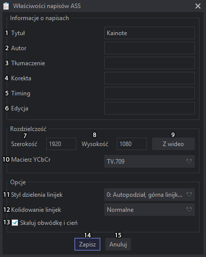

Właściwości ASS
Właściwości ASS
Okno właściwości można załączyć z menu Napisy > Właściwości ASS, bądź z paska narzędzi klikając w  .
.

Właściwości pliku ASS niewiele się różnią od tych z Aegisuba.
- Tytuł napisów, opcje od 1-6 są tylko czysto informacyjne, nie mają żadnego wpływu na same napisy.
- Autor Napisów, w sumie to zwykle jest tak, że autorem napisów jest osoba tłumacząca, chociaż bywa i tak, że osoba tłumacząca dostarcza tylko sam tekst.
- Wpisać osobę robiąca przekład z języka obcego.
- Wpisać osobę odpowiedzialną za edycję napisów.
- Wpisać osobę odpowiedzialną za timing napisów.
- Wpisać osobę, która korygowała napisy.
- Szerokość napisów, aby napisy wyświetlały się poprawnie zalecane jest, by była ona taka jak w wideo albo przynajmniej miała taki sam aspect ratio czyli szerokość / wysokość.
- Wysokość napisów, aby napisy wyświetlały się poprawnie zalecane jest, by była ona taka jak w wideo albo przynajmniej miała taki sam aspect ratio czyli szerokość / wysokość.
- Pobiera wartości szerokości i wysokości z wideo, gdy jest ono wczytane.
- Macierz YCbCr. Pozwala wybrać macierz kolorów wideo. TV.709 dla wideo o rozdzielczości HD i większej i TV.601 dla niższych rozdzielczości, reszta opcji nie zmienia nic w VSfiltrze więc najlepiej ich nie używać. Możliwe że są używane w Libass, ale większości odbiorców zobaczy błędnie wyświetlane kolory, bo używa różnych wersji VSfiltra.
- Sposób dzielenia linijek działa tak samo jak {\q numer} wstawiane bezpośrednio w linijkę tyle że odnosi się do całych napisów.
- 0 i 3 dzielą automatycznie starając się zachować zbliżoną wielkość linii tyle że w przypadku 0 górna jest szersza a 3 dolna jest szersza,
- 1 dzieli dopiero gdy już tekst nie mieści się w linijce nie próbując wyrównywać linijek, pierwsza linia jest pełna a w drugiej może być tylko jeden wyraz.
- 2 dzielą tylko \N i \n.
- Kolidowanie linijek ustawia kolejność rysowania rysowania linijek nachodzących się w czasie, w przypadku normalnego pierwsza linia zostaje na swoim miejscu a druga jest rysowana nad nią, a przy odwróconym wg definicji Aegisuba ma rysować pierwszą u góry a drugą na dole, ale tak się nie dzieje, może to tylko działa w niektórych wersjach Vsfiltra.
- Kontroluje rysowanie obwódek i cieni, gdy ta opcja jest wyłączona korzysta z rozdzielczości wideo obwódki i cienie są węższe wraz z wzrostem rozdzielczości wideo. Gdy ta opcja jest zaznaczona to korzysta z rozdzielczości skryptu ASS i wtedy wszystkie ASS z jedną rozdzielczością wyglądają tak samo niezależnie od rozdzielczości wideo. Druga opcja jest domyślnie zaznaczona.
- Zapisuje zmiany.
- Anuluje zmiany i zamyka okno.